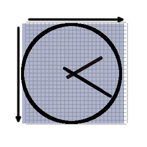
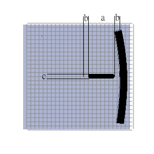
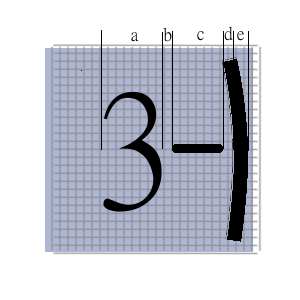

Now that we have a functional, albeit rudimentary clock, we can start making it look good, like a real clock.
Border
Adding a border is really, really easy as the canvas element includes native functions which let us draw one with just a few lines of code:
if (options.borderwidth > 0) {
c.beginPath();
c.lineWidth = size * options.borderwidth / 100;
c.arc(0, 0, size - (size * opt.borderwidth / 100), 0, 2 * Math.PI);
c.stroke();
}
This piece of code checks whether a borderwidth has been set in the options and if it has, it draws an arc with its origin at the centre (0,0), a radius of the size of the clock (minus the width of the line to account for the line itself), starting at angle 0 and progressing 2 pi radians (360 degrees).

I'll pause for a moment to explain why we're using size * options.borderwidth / 100 rather than just options.borderwidth. This is because the intention behind the construction of the clock in this way is to keep its look and feel consistent independently of the overall size of the clock. The dimensions that are specified in the options are therefore translated into percentages of the clock size rather than used as-is. Thus, specifying "5" as the border width will result in a border thickness that is 5% the radius of the clock. This will therefore expand and contract depending on the overall size of the clock. When we put all the components together later the usefulness of this will become apparent.
Looking better! Let's press on and add some
Tick Marks
By "tick marks" I refer to the little lines that go around the edge of the clock to indicate the hour marks. We've looked at the concept of drawing lines and rotating the canvas context previously and we are going to use the same technique to draw the tick marks.
Let's think about the logic, each little line needs to be drawn near the edge of the clock, but not so close that it overlaps the border. In fact, it would be a good idea if there was a configurable gap between the inner edge of the clock border and the start of the line itself.
There are a few options concerning tick marks appearance that we should set. In line with the rest of the options that we are using, we will put each of these in the options object when we call the function to draw the clock. Options to include are the length of each tick mark, the width of each tick mark, the gap between the tick mark and the edge and the number of tick marks. If no tick marks are specified, no tick marks are drawn.

In the image above, "a" is the tick length, "b" is the gap and "c" is the width.
It makes sense then to moveTo the outer end first and then draw a line inwards towrds the centre.
To make the little tick marks, we should start at zero rotation and then rotate by 2*PI/n radians (where n is the number of tick marks required) between each tick mark. Let's see what that looks like:
//Tick Marks
if (parseInt(opt.ticknumber, 10) > 0) {
for (i = 0; i < parseInt(opt.ticknumber, 10); i++) {
c.beginPath();
c.lineWidth = size * opt.tickwidth / 100;
c.moveTo(0, size - (size * opt.borderWidth / 100) - (size * opt.tickgap / 100));
c.lineTo(0, size - (size * opt.borderWidth / 100) - (size * opt.tickgap / 100) - (size * opt.ticklen / 100));
c.stroke();
c.rotate((2 * Math.PI) / opt.ticknumber);
}
}
For completeness, here is an excerpt of the code to set the ticks options (it's all put together at the bottom of the page)
paintClock(document.querySelector("#clockcanvas"),
{ticknumber: 12,
ticklen: 4,
tickgap: 2,
tickwidth: 1,
);
Remember that these numbers are relative, not absolute. In this example, the tick gap will be 2% of the clock radius, not 2px.
Numbers
In this section, we will demonstrate how it is possible to "draw" text on a canvas. Again, this uses completely native functions, but the complexity comes from getting the numbers in the right positions.
Initially, we set the size of the font in pixels using the font attribute of the canvas context
c.font = fontheight + "px sans-serif";
Fontheight is of course, an option that we set when we call the function to draw the clock. Then, we work out how far from the left and right edges of the clock the centre of the "9" and the "3" respectively need to be. Let's examine that zoomed in area of our clock again:

In this picture, you can see that, starting at the outer edge of our clock (which is "size" from the origin in the middle at 0,0), we need to move inwards by the width of the border (e), the gap between the border and the tick mark (d), the length of the tick mark (c) the gap between the tick mark and the number (b) and half of the number's width (a/2).
The borderwidth, tick mark length and tick mark gaps can be specified in our options, but the width of the number needs to be calculated. Fortunately, the canvas context comes to our rescue again with the measureText function. This accepts a string of text as the argument and returns the size as it would be drawn on the current context. Thus, in our example:
a = c.measureText("3").width
We can use the same measurements for both the 3 and the 9, but we need to use negative values for the 9 instead as we'll be counting in from the left rather than in from the right.
As we are using the middle of the number to align it to the right place, we need to tell the context to centre the text at the coordinates we give it. To do that we use the following lines:
c.textAlign = "center";
c.textBaseline = "middle";
For the "12" and the "6" we follow the same idea, but we already know the height of the text as it's the same as the pixel size we specified in fontheight from our options.
Putting it together, the code looks like this:
//Numbers
if (parseInt(opt.numbersze, 10) > 0) {
fontheight = size * (opt.numbersze / 100);
c.font = fontheight + "px sans-serif";
var fontcent39 = size - (size * opt.borderWidth / 100) - (size * opt.tickgap / 100) - (size * opt.ticklen / 100) - (size * opt.tickgap / 100) - c.measureText("9").width / 2;
var fontcent126 = size - (size * opt.borderWidth / 100) - (size * opt.tickgap / 100) - (size * opt.ticklen / 100) - (size * opt.tickgap / 100) - (fontheight / 2);
c.textAlign = "center";
c.textBaseline = "middle";
c.fillText("12", 0, -fontcent126);
c.fillText("6", 0, fontcent126);
c.fillText("9", -fontcent39, 0);
c.fillText("3", fontcent39, 0);
}
And we're almost there! We have learned about the canvas element, we've learned how to draw hands on it and we've learned how to put a border round it, numbers on the clock face and tick marks around the edge. The next page has an interactive demonstration of how much customisation this provides.